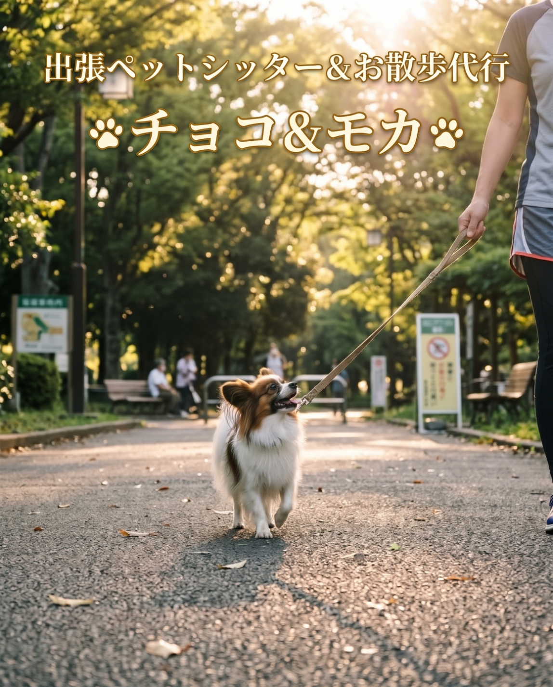

「ホテルだと緊張してしまう」「旅行や急な残業でごはん・トイレのお世話をお願いしたい」「仕事や体調不良でお散歩に行けない」そんな時は、有資格のペットシッターが堺市・高石市・和泉市のご自宅へ訪問いたします。小型犬はもちろん、猫ちゃん・小動物も対応可能です。

| コース | 通常 (09-19時) | 夜間 (19-24時) | 延長 (30分) | 追加 |
|---|---|---|---|---|
| 小型犬 (60分) | ¥3,300 | ¥4,400 | 通常¥1,870 / 夜間¥2,530 | 1匹 +¥2,200 |
| 猫 (60分) | ¥2,970 | ¥3,850 | 通常¥1,540 / 夜間¥2,310 | 1匹 +¥1,650 |
| 小動物 (45分) | ¥2,420 | ¥3,850 | 通常¥1,430 / 夜間¥2,200 | 1ケージ +¥1,100 |
堺市・高石市・和泉市の飼い主様へ｜お留守番やケア・しつけの疑問をプロが解説